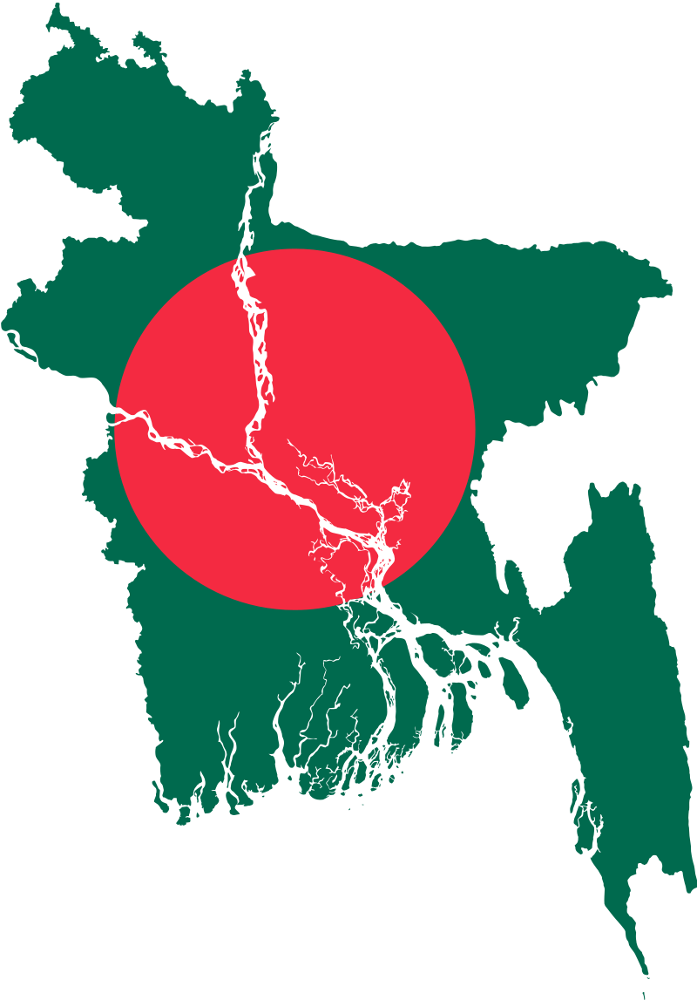

Bangladesh is a beautiful country located in South Asia. It is known for its rich culture, history, and natural beauty. In this composition, we will explore some of the key aspects of Bangladesh.
Bangladesh is located in the northeastern part of South Asia, bordered by India to the north, east, and west, and Myanmar to the south. The country has a total area of 147,5702 kilometers and is largely a flat and low-lying delta. The country is dominated by the Ganges-Brahmaputra-Meghna river system, which drains into the Bay of Bengal.
BD has a subtropical monsoon climate, with hot and humid summers and cool winters. The monsoon season lasts from June to October and brings heavy rainfall to the country. The country is also prone to natural disasters such as cyclones, floods, and landslides.
 Culture and History:Bangladesh has a rich cultural heritage, which is a blend of Islamic, Hindu, and Buddhist traditions. The country has a long and colorful history, with evidence of human habitation dating back to the Stone Age. The region was ruled by various empires and kingdoms throughout history, including the Maurya Empire, the Gupta Empire, and the Mughal Empire.
In 1947, when the Indian subcontinent was partitioned into India and Pakistan, Bangladesh was initially part of Pakistan, known as East Pakistan. In 1971, a war of independence broke out, resulting in the creation of the independent nation of Bangladesh.